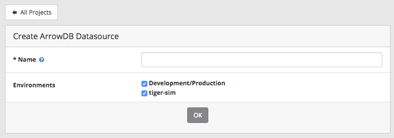
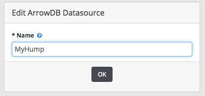
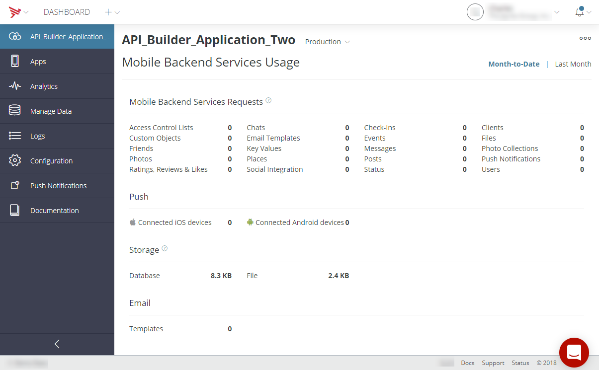
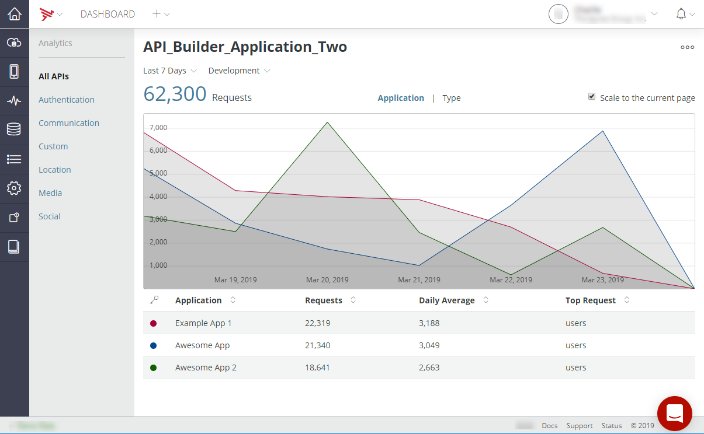
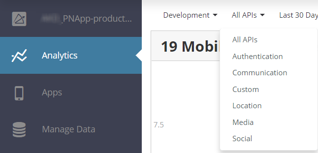
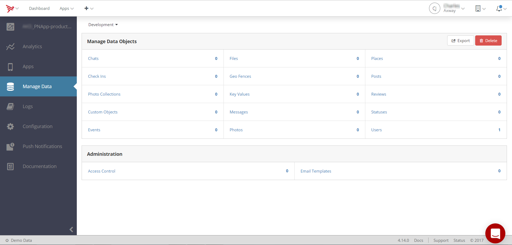
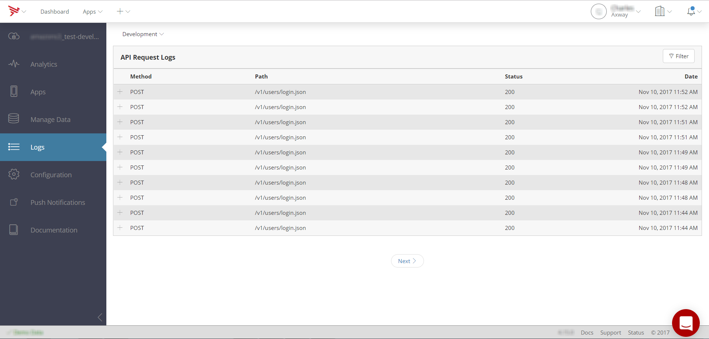
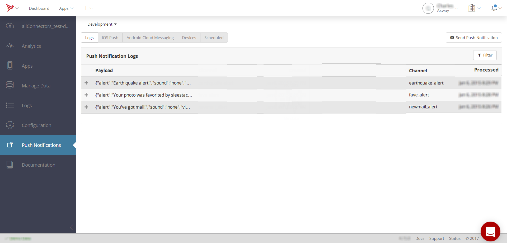

Managing Mobile Backend Services Datasources
To view service details and manage data properties for a Mobile Backend Services (MBS) datasource, select it from the Apps menu. Or, select All to view a list of all projects from which to select.
Create a New Datasource
To create a standalone Mobile Backend Services datasource (an MBS datasource that is not tied to a specific client application):
-
Click the Add menu (+) in the top navigation bar.
-
Select Create Mobile Backend Services Datasource.
-
Enter a name for the datasource.
-
If you have multiple environments, select the environments to enable for the datasource.
-
Click OK.

Appcelerator Dashboard will redirect you to the new MBS datasource.
Change the Name of the Datasource
To changes the name of the datasource:
-
Select the datasource from the Apps menu or from the All page view.
-
In the Overview tab of the datasource, click the Edit button to the right of the datasource name.

-
Enter a new name for the datasource.
 -
Click OK.
View API Usage Data
The Application tab displays the API usage data and includes the number of API calls made to MBS, the number of devices connected to receive push notifications, the number of email templates available to the application, and the amount of disk storage being used.

View API Analytics
The Analytics tab displays the total number of API calls for the selected time period by API type (Chats or Users APIs, for instance) or by individual application.

By default, all APIs are included in the display. To only display specific categories of APIs, select the category from the API category menu, as shown below.

Manage Data
The Manage Data tab displays the number of each type of MBS object created by the selected application. Click the MBS type in the table to view, edit, create and delete objects of that type (see Managing Data Objects).
To export your application's MBS data in a JSON format, click Export. To delete your application's data click Delete.

View and Filter API Logs
The Logs tab displays a paginated table of all API calls made by your application to the selected MBS service.
The table includes the following fields:
-
Method – HTTP method used.
-
Path – Path of the HTTP request.
-
Status – HTTP status of the request.
-
Date – Date and time of the request in UTC.
Clicking a table row expands it to display the following additional fields:
-
Source IP – IP address of the client that made the request.
-
Parameters – Click Show to view a list of request parameters, and the full URL request.

You can filter MBS API requests by their date.

Configuration
On the Configuration tab you can select from the following sub-tabs:
-
Keys – View your API Builder application key, and OAuth key and secret.
-
Settings – Change API Builder settings such as enable or disable new user email verification, friend request type (two-way or one-way), and whether users can be created from the application or only from Dashboard.
-
Email – Provide SMTP or MessageGears server settings for Dashboard to send email on behalf of your application.
For details, see Configuring Cloud Services.
Manage Push Notifications
The Push Notifications tab provides the following features:
-
Send or Schedule Push Notifications – The See Sending and Scheduling Push Notifications for details.
-
Push Logs – Paginated and filterable table of push notification log items. See Push Notification Logs.
-
iOS Push and Android Push – Configure API Builder Push to communicate with the Apple Push Notification Service (APNS) or Firebase Cloud Messaging service for Android (FCM) on behalf of your application. Firebase Cloud Messaging (FCM) is the new version of GCM. See iOS and Android Push Notification Settings for details.
-
Devices – View a list of devices subscribed to receive push notifications. See Viewing Subscribed Devices.

Push Notification Logs
Click the Logs tab to view a paginated table of push notifications delivered by Dashboard, and the status of the notification. Each row contains the following fields:
-
Payload – The JSON notification payload.
-
Channel – The name of the subscription channel to which the notification was delivered.
-
Created – The time and date the push notification was created.
-
Notification ID – ID of the delivered notification.
-
iOS – The number iOS devices that received the push.
-
Android – The number of Android devices that received the push.
-
Devices – The total number of devices that received the push.
-
Status – The status of the notification (Success or Fail).
-
Sent – Time and date the notification was sent.

You can filter the listing of push notifications by channel name or creation date.
Push Notification Settings
The iOS Push and Android Push tabs are where you configure Dashboard to use the APNS or either the FCM or GCM push notification services. For details, see Configuring push services.
iOS Push Notification Settings
Click the iOS Push tab to configure the application to use the Apple Push Notification service. Before configuring APN, you need to create a Push Notification Certificate and export it as a PKCS #12 file. For instructions, see Configuring push services for iOS devices.
-
Click Choose File in the Push Certificate field.
-
Locate the PKCS #12 file with your Push Notification certificate and click Choose.
-
Enter the certificate's password in the Certificate Password box field.
-
Click Save Changes.

Android Push Notification Settings
Click the Android Cloud Messaging tab to configure the application to use the Firebase Cloud Messaging (FCM) service. Firebase Cloud Messaging (FCM) is the new version of GCM. Before configuring FCM, you need to obtain an FCM or GCM sender ID and Google API server key. For instructions, see Configuring push services for Android devices.
-
Enter the Google API server key in the Server Key field and the FCM or GCM sender ID in the Sender ID field.
-
Click Save Changes.

View Subscribed Devices
Click the Devices tab to view a list of subscribed users, devices, and their channels subscriptions. Each list row contains the following columns:
-
Channel – The notification channel(s) the device is subscribed to.
-
Type – The subscription's push notification type (Android or iOS).
-
User – The full name of the API Builder user subscribed to the channel. For token-based subscriptions, this field is empty.
-
Device Token – The device token obtained from the Firebase Cloud Messaging or Apple Push Notification service. Click the expander (+) button to view the complete device token.
For example, in the following image, the first device is subscribed to the friend_request and all_users channels. The User column is empty in this case, which indicates that the subscription is token-based rather than session-based. The next two users, "Abby Gail" and "Will Lee", are both subscribed to the all_users channel. The User column displays the name of each API Builder user and links to that user's API Builder account page.

You can filter the list of subscribed devices by channel, type or user ID. To filter the list:
-
Click the Filter button.
-
In the first drop-down, select either User ID, Type or Channel to filter the list according to that criteria.
-
You can only select Equals in the second drop-down.
-
In the last field, enter the value you want to filter by:
-
For User ID, enter the object ID of the User.
-
For Type, either enter android or ios.
-
For Channel, enter the name of the channel.
-
-
Click Apply Filters.
The example below lists all Android devices subscribed to push notifications.

To remove the filter, click Clear Filter.
View Scheduled Notifications
Click the Scheduled tab to display a list of one-time or recurring scheduled notifications. Initially, the list displays the following fields:
-
Name – Schedule name.
-
Recurring – A boolean that indicates if the schedule is recurring (Yes) or one-time (No).
-
Payload – The JSON payload to deliver with the notification.
-
Start Time – The date and time (in UTC) that the notifications are scheduled to start being delivered.
Click the expander button (+) next a list item to view details about the schedule, or to edit or delete the schedule. The details view contains the following fields:
-
Channel – Name of the channel the notification will be sent.
-
To Users – The API Builder Users to which the message will be sent.
-
Starts On/Ends On – Start and end date and time the scheduled starts and expires.
-
Recurs – How often the schedule repeats. Possible values are Daily, Weekly or Monthly.